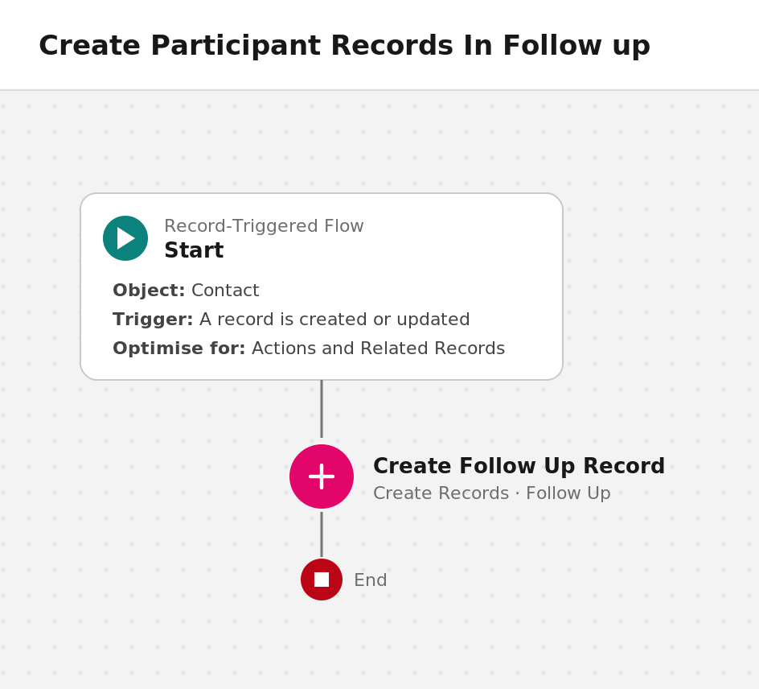
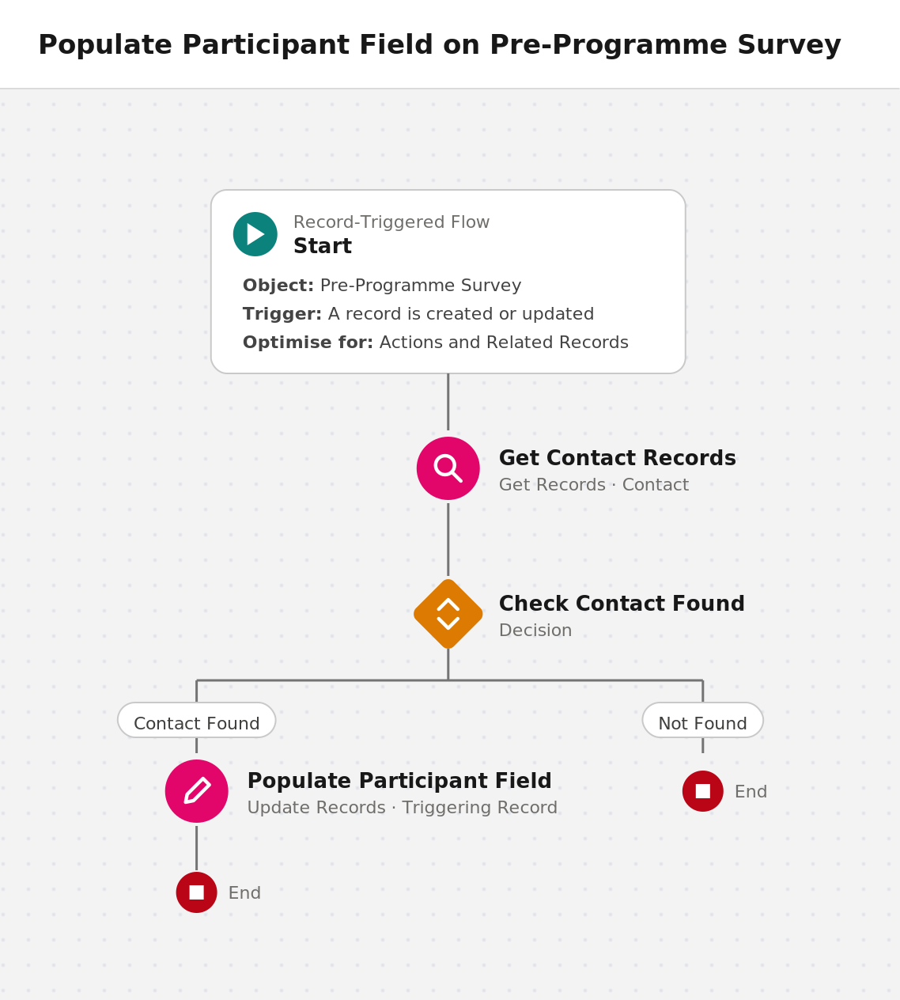
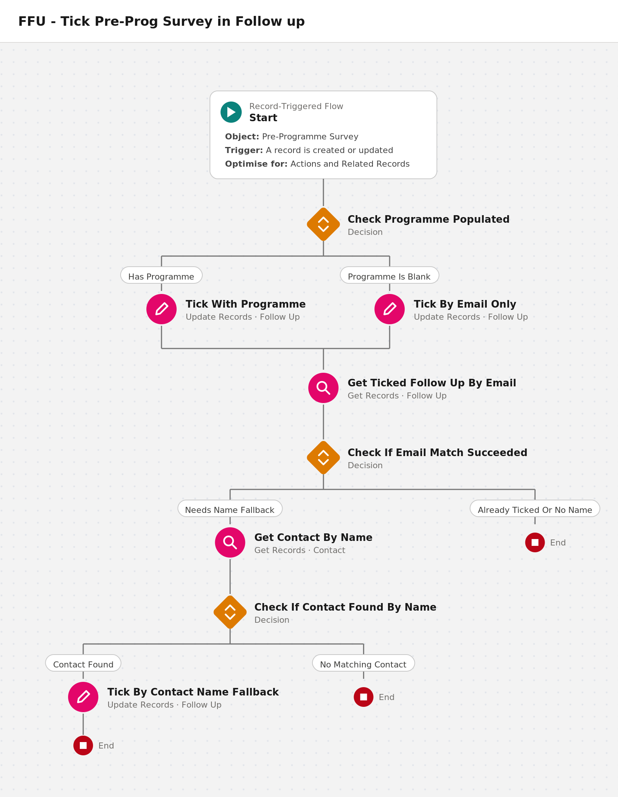
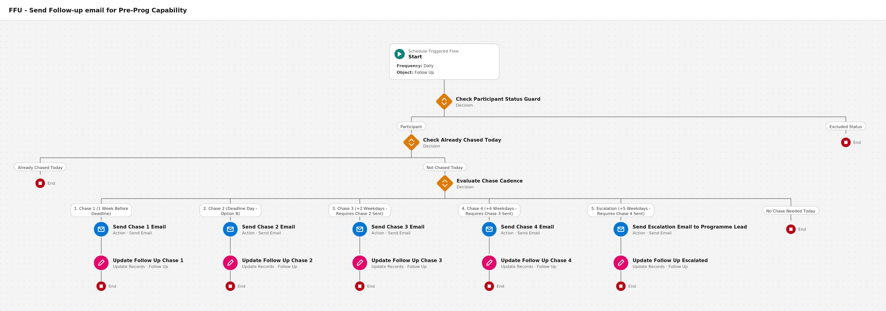
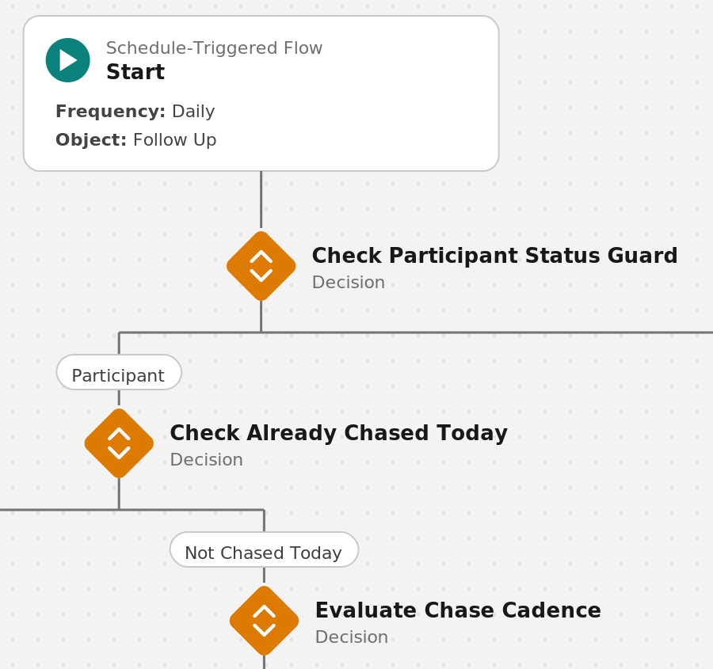
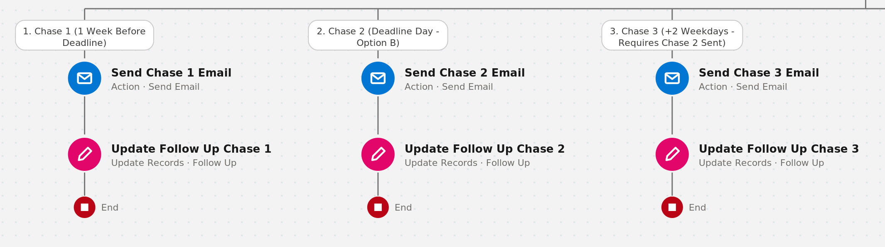
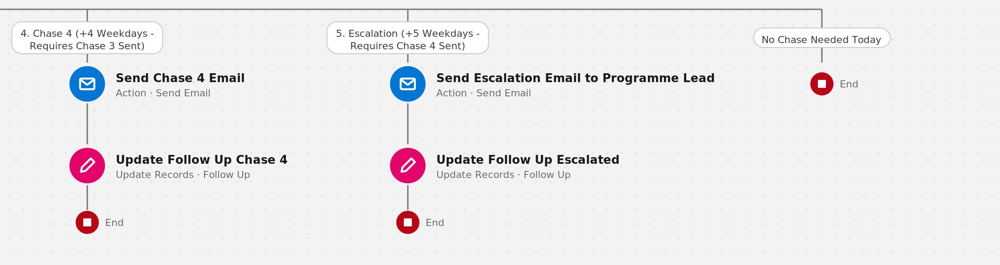
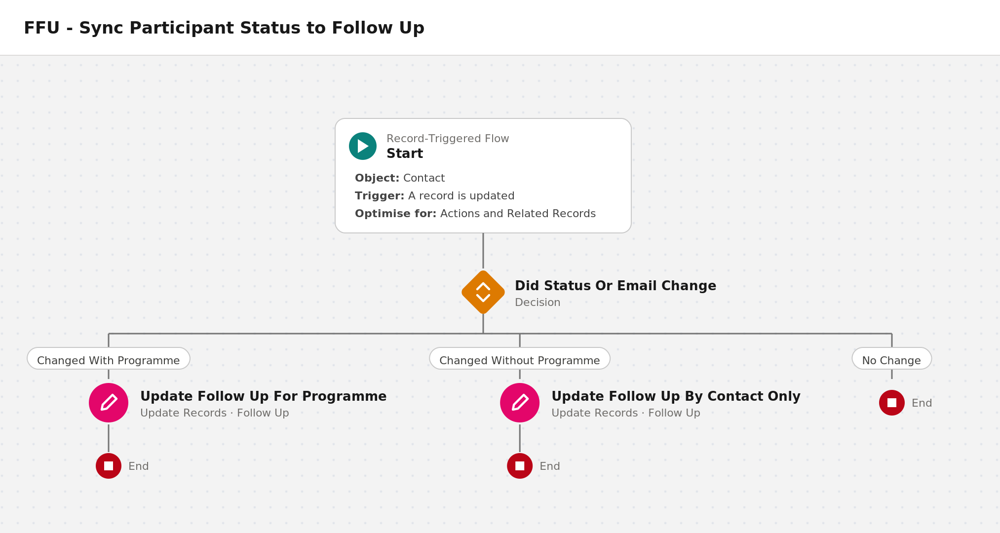
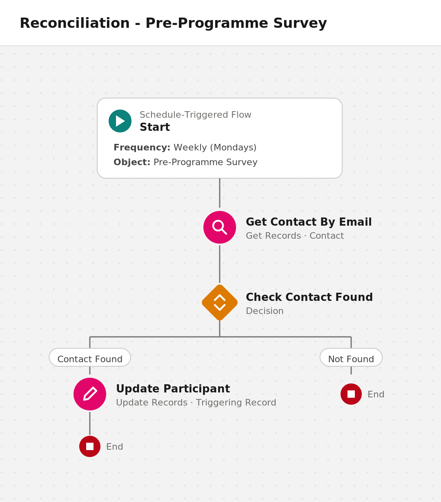

Linking survey responses to participants, tracking completion in one place, and chasing non-respondents on a fixed cadence, with more than 35 production Salesforce Flows for a UK leadership-development charity.
Every leadership programme the organisation runs collects up to nine pieces of participant feedback across its lifecycle: the participant agreement, pre-programme and post-programme capability surveys, pre-residential RSVP, residential feedback, mid-point and end-of-programme surveys, celebration RSVP and a six-month catch-up. Responses arrive from Jotform into separate Salesforce objects. They were often not linked to the participant’s Contact record (participants used work and personal email addresses interchangeably), there was no single view of who had completed what, and the team chased non-respondents by hand from spreadsheets.
I designed a hub-and-spoke model around a central Follow Up object: one record per participant per programme, with a completion checkbox, deadline, survey link and chase stage for each survey. Six layers of automation keep it accurate and act on it:
Scale. The pattern is applied to every survey type: more than 35 active flows (9 tick flows, 8 linking flows, 9 scheduled chasers, 8 weekly reconciliations, plus the create and sync flows). The steps below use the Pre-Programme Capability Survey as the worked example; the other surveys follow the same design.
Flow: Create Participant Records In Follow up

Completion tracking needs a record to track against. Creating these by hand for every cohort was slow and easy to miss.
Runs when a Contact is created or updated and their status contains “Participant”. It creates a Follow Up record carrying the Contact, their email, participant status and programme/course.
Entry criteria fire only when the record changes to meet the condition, so each participant gets one Follow Up record rather than one per edit. A single-element flow keeps it fast and easy to maintain.
Every participant has exactly one Follow Up record from the moment they become a participant. Nobody sets up tracking records by hand for a new cohort.
Flow: Populate Participant Field on Pre-Programme Survey

Jotform writes survey responses into Salesforce without a Contact lookup, so responses sat unconnected to the people who submitted them.
When a Pre-Programme Survey record is created or updated without a Contact, the flow looks up the matching Contact and writes the lookup onto the survey record.
A decision checks the Contact was found before updating, so the flow never fails or writes a blank value. Eight versions of this flow cover every survey object.
Survey responses are connected to the person who submitted them as they arrive, on every survey object, without manual matching.
Flow: FFU - Tick Pre-Prog Survey in Follow up

Matching on email alone failed whenever a participant answered from a different address, leaving completed surveys showing as outstanding and triggering unnecessary chasers.
Ticks the Pre-Programme Capability box on the right Follow Up record. It matches on email plus programme when the programme is known, or email only when it is blank. If the email match fails, it falls back to finding the Contact by first and last name and ticks their record instead.
Three-tier matching (email + programme, email only, name fallback). A formula normalises programme names (e.g. “Leadership Programme 16” to “LP16”) so records match across Jotform and Salesforce naming. The flow re-queries after the first update to confirm success before falling back.
A completed survey shows as complete even when the participant answered from a different email address, so people who have already responded are not chased.
Flow: FFU - Send Follow-up email for Pre-Prog Capability




Reminders were sent by hand, inconsistently and sometimes to people who had already responded or withdrawn.
A daily scheduled flow runs over every Follow Up record whose survey is not yet complete, has a deadline and link, and has not been escalated. It sends Chase 1 a week before the deadline, Chase 2 on deadline day, Chase 3 two working days after, Chase 4 four working days after, and on day five escalates to the programme lead. Each send stamps the chase stage and date on the record.
Built-in guards: active participants only, never twice in one day, and each stage requires the previous one, so the sequence cannot skip or repeat. Working-day formulas move dates off weekends. Emails use branded HTML templates with each participant’s own survey link, and stop the moment the survey is ticked.
Non-respondents are chased automatically on a fixed cadence: four reminders, then escalation to the programme lead. Staff no longer chase from spreadsheets, and chasing stops the moment a survey is ticked.
Flow: FFU - Sync Participant Status to Follow Up

If a participant withdrew or changed email after their Follow Up record was created, the chasers would keep emailing the wrong person or the wrong address.
When a Contact’s participant status or email changes, the flow updates the matching Follow Up record: matched on Contact and programme when the programme is known, or on Contact alone when it is not.
Uses ISCHANGED-style conditions so it only acts on real changes. It works hand in hand with the status guard in the chaser, so withdrawn and deferred participants drop out of the sequence automatically.
Withdrawn and deferred participants stop receiving chasers automatically, and reminders go to the participant’s current email address.
Flow: Reconciliation - Pre-Programme Survey

Some surveys arrive before the participant’s Contact record exists, for example when an application is still being processed. The real-time linking flow has nothing to match against at that moment.
Every Monday morning the flow finds Pre-Programme Survey records that still have no Contact, looks up the Contact by email and fills the lookup. Once linked, the tick flow can mark the survey complete.
Real-time automation plus a scheduled sweep means nothing falls through the cracks without manual data cleaning. One reconciliation flow runs for each survey object.
Responses that arrive before the participant’s Contact exists are picked up by the next Monday sweep and counted as complete, with no manual data cleaning.
Outcomes follow directly from what the flows do in the live org; the figures are the framework’s own scope.
| Before | After the flows went live |
|---|---|
| Survey responses sat in separate objects, often not linked to the participant’s Contact record. | Every response is linked to its participant as it arrives, on every survey object. |
| There was no single view of who had completed what. | One Follow Up record per participant per programme shows completion for every survey in one place. |
| The team chased non-respondents by hand from spreadsheets. | Non-respondents are chased automatically on a fixed cadence, with escalation to the programme lead after four chasers; staff no longer chase from spreadsheets. |
| Reminders were inconsistent and sometimes reached people who had already responded or withdrawn. | Chasing stops the moment a survey is ticked, and withdrawn or deferred participants drop out automatically. |
| Surveys that arrived before the participant’s Contact existed had nothing to match against. | A weekly sweep links them once the Contact exists, so nothing falls through the cracks without manual data cleaning. |
Diagrams are drawn from each flow’s live metadata in a production org, showing every element, decision outcome and path as built. No participant data is shown, and the organisation is not named.
Download the Salesforce Flows portfolio (PDF)